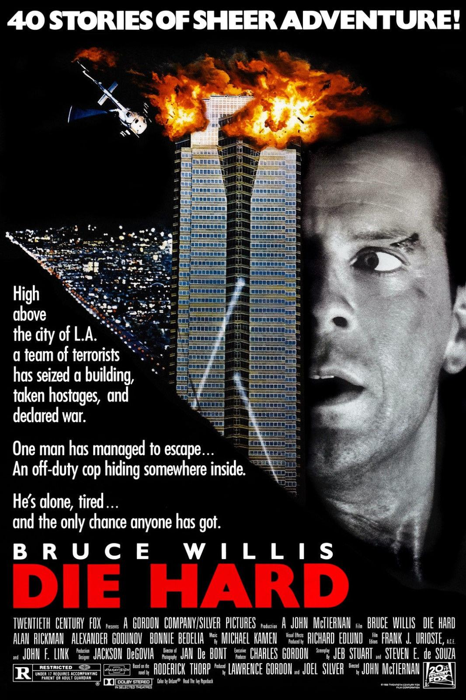

In my free time I love to watch movies. I would say I have a diverse range of movies I like from comedies to dramas to documentaries. Some of my favorite genres are comedy,psychological thrillers, and actioon movies. A couple of my favorites are mentioned below.
Comedies
Napolean Dynamite may not be at the top of everybpdies list for comedies but it holds a special place in my heart. This movie is filled with so many iconic quotes and scenes that many comedy fans are sure to recognize. I have a lot of nostalgia for this movie because it was one of the few movies my family owned as a kid. Because of this, when in doubt we would watch this movie and it never failed to make me laugh. It's dry humor and classic setting make it a must watch for comedy lovers.
Psychological Thrillers
Inception is one of those classic movies that any film buff will have a strong opinion. Many people I have met will say that this is their favorite movie for good reason. Inception is known for being trippy and mindbending. Inception is the type of movie that at the end will leave you wondering what just happened and questioning if anything is real. Inception is a great movie since you can watch it many times and see something new each time over. I would highly recommend.
Action

The infamous question, is Die Hard a christmas movie? I am inclined to beleieve that it is. Die Hard is truly a classic movie and considered one of Bruce Willis' greatest. The movie is filled with action and a very cool premise of the whole story taking place within one building. A little gruesome at some points but you really find yourself at the edge of your seat, thinking "no way he escapes this". If you are a fan of nonstop action, Die Hard is a much watch.
 Napolean Dynamite may not be at the top of everybpdies list for comedies but it holds a special place in my heart. This movie is filled with so many iconic quotes and scenes that many comedy fans are sure to recognize. I have a lot of nostalgia for this movie because it was one of the few movies my family owned as a kid. Because of this, when in doubt we would watch this movie and it never failed to make me laugh. It's dry humor and classic setting make it a must watch for comedy lovers.
Napolean Dynamite may not be at the top of everybpdies list for comedies but it holds a special place in my heart. This movie is filled with so many iconic quotes and scenes that many comedy fans are sure to recognize. I have a lot of nostalgia for this movie because it was one of the few movies my family owned as a kid. Because of this, when in doubt we would watch this movie and it never failed to make me laugh. It's dry humor and classic setting make it a must watch for comedy lovers. Inception is one of those classic movies that any film buff will have a strong opinion. Many people I have met will say that this is their favorite movie for good reason. Inception is known for being trippy and mindbending. Inception is the type of movie that at the end will leave you wondering what just happened and questioning if anything is real. Inception is a great movie since you can watch it many times and see something new each time over. I would highly recommend.
Inception is one of those classic movies that any film buff will have a strong opinion. Many people I have met will say that this is their favorite movie for good reason. Inception is known for being trippy and mindbending. Inception is the type of movie that at the end will leave you wondering what just happened and questioning if anything is real. Inception is a great movie since you can watch it many times and see something new each time over. I would highly recommend.